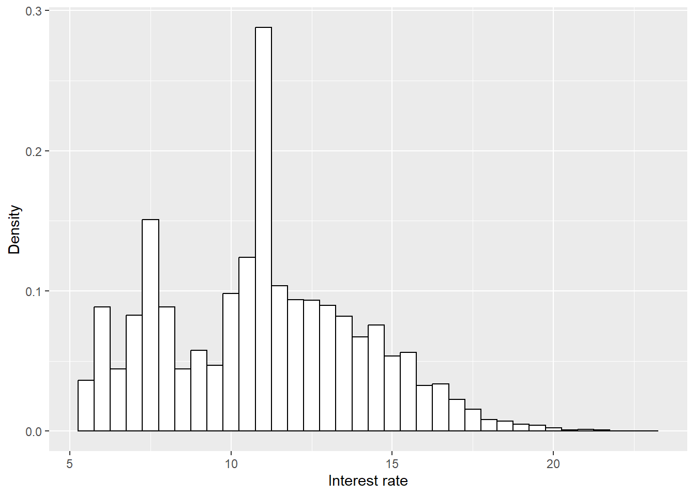
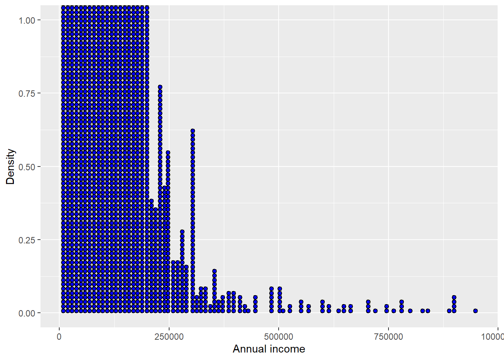
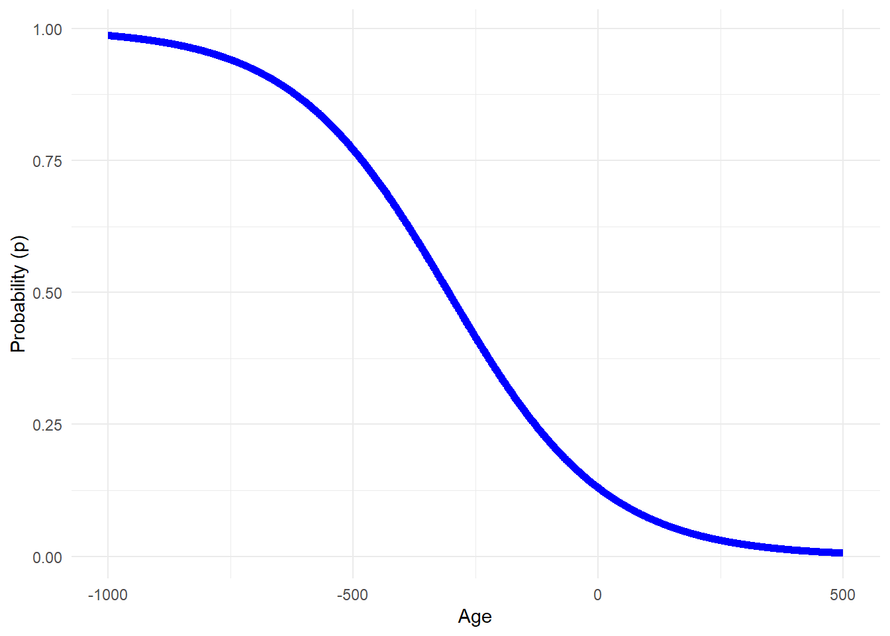
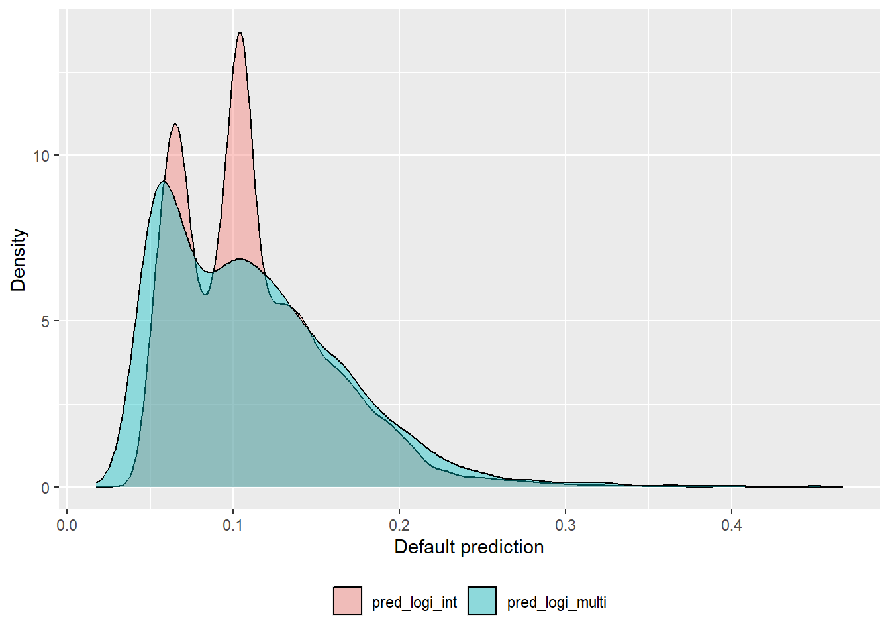
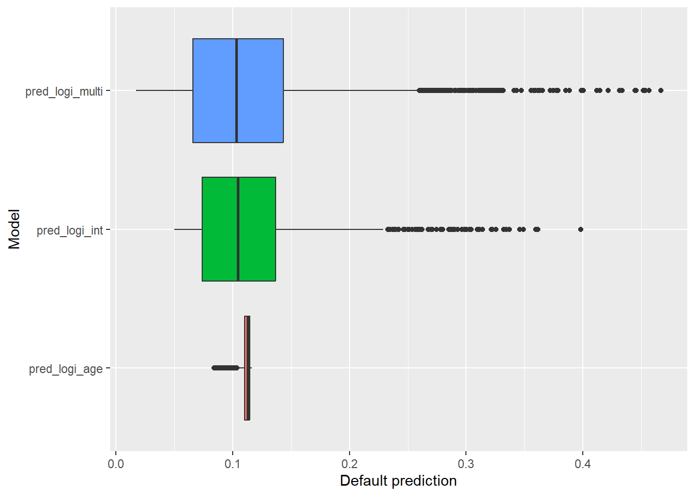
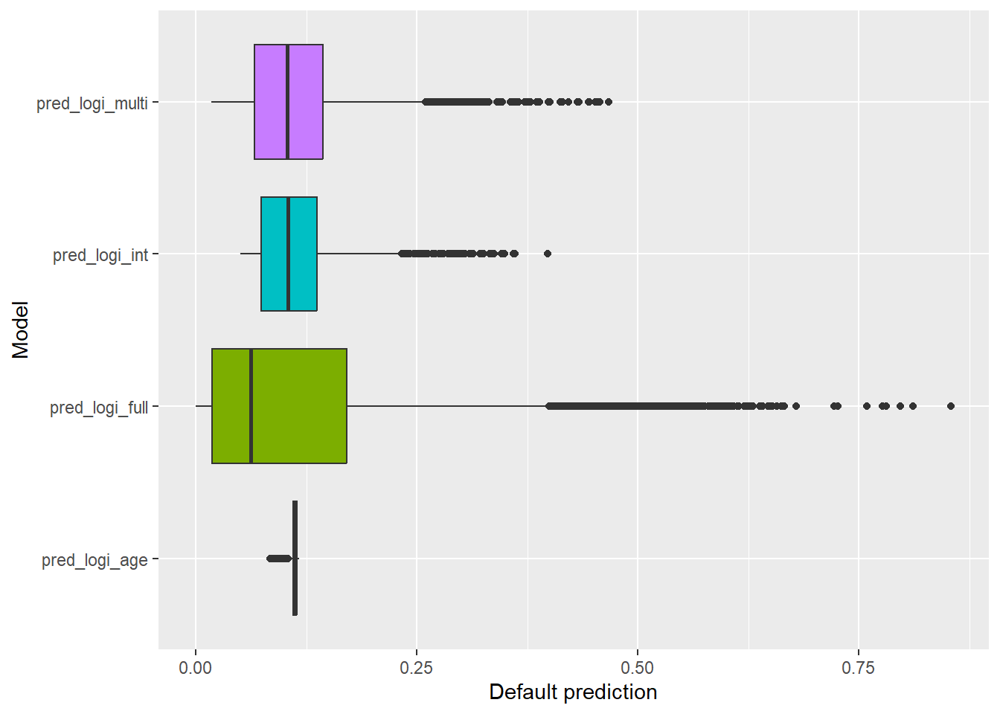
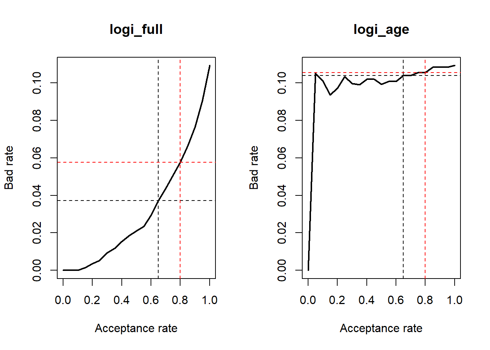
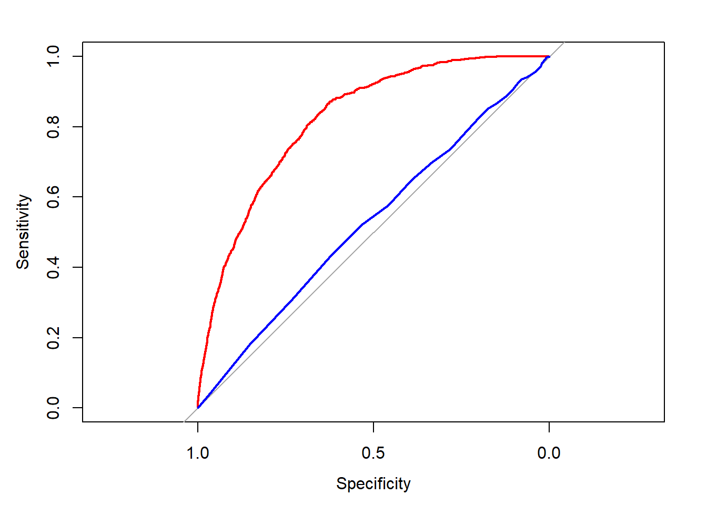

This material relies on Hull (2015) credit risk chapters and Lore Dirick credit risk DataCamp course. Some mathematical background is skipped to emphasize the data analysis, model logic, discussion, graphical approach and R coding (R Core Team 2024). As in the philosophy of Knuth (1984), the objective of this document is to explain to human beings what we want a computer to do as literate programming. This is a work in progress and it is under revision.
Introduction.
Credit risk models play a pivotal role in the financial landscape, providing institutions with a systematic framework to assess and manage the risks associated with lending and investment activities. One crucial component of these models is the estimation of the probability of default, which quantifies the likelihood that a borrower will fail to meet their debt obligations. The relevance of credit risk models lies in their ability to enhance decision-making processes by offering a comprehensive understanding of the potential creditworthiness of individuals, companies, or financial instruments. By utilizing statistical methods, historical data, and various financial indicators, these models enable financial institutions to make informed decisions about lending, pricing, and portfolio management. The estimation of the probability of default not only aids in risk assessment but also supports regulatory compliance, allowing institutions to maintain a healthy balance between risk and return in their credit portfolios. In an ever-evolving financial landscape, the continual refinement and application of credit risk models are essential for fostering stability and resilience within the financial system.
1 Loan analysis.
The main objective of this section is to predict whether a person or client applying for a loan will repay it or not. This issue can be considered a classification problem, where based on information about the client and the characteristics of their loan application, the client is classified into one of two categories: whether they will default or not. There are various ways to approach this classification problem; in this section, we will use a simple machine learning model called logistic regression. The model is first estimated or trained and then evaluated using new data to determine how well it performs the classification.
Let’s load the required R packages first.
Code
# Logistic modelslibrary(gmodels) # CrossTable()
Warning: package 'gmodels' was built under R version 4.4.2
The following objects are masked from 'package:stats':
filter, lag
The following objects are masked from 'package:base':
intersect, setdiff, setequal, union
Code
library(pROC) # roc
Warning: package 'pROC' was built under R version 4.4.2
Type 'citation("pROC")' for a citation.
Adjuntando el paquete: 'pROC'
The following object is masked from 'package:gmodels':
ci
The following objects are masked from 'package:stats':
cov, smooth, var
Code
library(vembedr)
This section relies on the DataCamp course Credit Risk Modeling in R by Lore Dirick. However, we incorporate a slightly different database and an extended analysis.
1.1 Explore the database.
Let’s load the data called loan_data_ARF.rds and then understand its structure before conducting any further analysis. This database is available here.
This dataset could represent a typical collection of data from a financial institution, such as a bank or a company that uses credit channels to sell its products or services. It contains 29,092 observations across 10 variables. Each observation corresponds to the personal and loan characteristics of an individual loan.
A key variable, our dependent variable, is loan_st, which indicates loan status. A value of 0 represents no default, while a value of 1 represents default. A default occurs when a borrower fails to make timely payments, misses payments, or ceases payments on the interest or principal owed. The definition of default can vary depending on the goals and interests of the analysis. For the purposes of this study, we classify loans simply as either default or no default.
The variable loan_st is dichotomous, or categorical. Our primary interest lies in predicting whether a new loan application will result in default or not.
Clearly, loan_data_ARF.rds represents past information, as we know with certainty whether an individual defaulted (1) or not (0). Historical data is valuable for understanding how likely an individual is to default based on their personal and loan characteristics. It is also essential for training quantitative models to predict outcomes for new applicants and for evaluating the performance of our classifications.
A variable name is considered too long when a shorter name can convey the same purpose just as effectively. Let’s rename some of them.
old_names new_names
1 loan_status loan_st
2 loan_amnt l_amnt
3 int_rate int
4 grade grade
5 emp_length emp_len
6 home_ownership home
7 annual_inc income
8 age age
9 sex sex
10 region region
New variable names have now been assigned.
We can take a look at the information in different ways. For example, look at the first 10 rows out of 29,092.
Code
head(dat, 10)
loan_st l_amnt int grade emp_len home income age sex region
1 0 5000 10.65 B 10 RENT 24000 33 0 E
2 0 2400 10.99 C 25 RENT 12252 31 0 E
3 0 10000 13.49 C 13 RENT 49200 24 0 S
4 0 5000 10.99 A 3 RENT 36000 39 0 S
5 0 3000 10.99 E 9 RENT 48000 24 1 N
6 0 12000 12.69 B 11 OWN 75000 28 1 N
7 1 9000 13.49 C 0 RENT 30000 22 1 N
8 0 3000 9.91 B 3 RENT 15000 22 1 N
9 1 10000 10.65 B 3 RENT 100000 28 0 W
10 0 1000 16.29 D 0 RENT 28000 22 1 E
Note that sex is 1 for female and 0 for male. Now, instead of looking the details of the first 10 rows, we can summarize with respect to home with the CrossTable() function.
Code
CrossTable(dat$home)
Cell Contents
|-------------------------|
| N |
| N / Table Total |
|-------------------------|
Total Observations in Table: 29092
| MORTGAGE | OTHER | OWN | RENT |
|-----------|-----------|-----------|-----------|
| 12002 | 97 | 2301 | 14692 |
| 0.413 | 0.003 | 0.079 | 0.505 |
|-----------|-----------|-----------|-----------|
We can also use CrossTable() to summarize two variables. In particular, instead of counting for home ownership we can add a second dimension like loan_st. This allows us to create more informative tables.
This table reveals defaults by home ownership. We can use histograms to see one variable distribution. In this case we have the interest rate distribution.
Code
ggplot(dat, aes(x = int)) +geom_histogram(aes(y=..density..), binwidth =0.5, colour ="black", fill ="white") +labs(y ="Density", x ="Interest rate") +theme(legend.position ="bottom", legend.title =element_blank())
Warning: The dot-dot notation (`..density..`) was deprecated in ggplot2 3.4.0.
ℹ Please use `after_stat(density)` instead.

Figure 1.1: Interest rate histogram.
The following is a dotplot figure for the annual income.
The Figure 1.2 above appears suspicious. The horizontal axis shows a very large annual income value (6,000,000). Additionally, there are only a few individuals with extremely high incomes. We should investigate further to determine whether these are valid observations or errors in the original dataset.
loan_st l_amnt int grade emp_len home income age sex region
4861 0 12025 14.27 C 13 RENT 1782000 63 0 E
13931 0 10000 6.54 A 16 OWN 1200000 36 0 W
15386 0 1500 10.99 A 5 MORTGAGE 1900000 60 1 N
16713 0 12000 7.51 A 1 MORTGAGE 1200000 32 0 E
19486 0 5000 12.73 C 12 MORTGAGE 6000000 144 1 E
22811 0 10000 10.99 A 1 MORTGAGE 1200000 40 1 E
23361 0 6400 7.40 A 7 MORTGAGE 1440000 44 1 E
23683 0 6600 7.74 A 9 MORTGAGE 1362000 47 0 E
28468 0 8450 12.29 C 0 RENT 2039784 42 0 E
One individual (ID 19486) is not only extremely wealthy but also 144 years old. As a result, I have decided to remove these nine observations. Data cleaning is a common task when working with large datasets, and it is acceptable as long as the integrity of the data remains intact.
Remember, the original dataset contains 29,092 rows. After removing 9 observations, we are left with 29,083 rows. Let’s take a look at the result.
Code
ggplot(dat, aes(income)) +geom_dotplot(binwidth =10000, fill ="blue") +labs(y ="Density", x ="Annual income") +theme(legend.position ="bottom", legend.title =element_blank())

Figure 1.3: Annual income without extreme values.
Somewhat better now.
We could also explore some gender issues.
Code
summary_table <- dat |>group_by(sex) |>summarize(Mean =mean(income),Median =median(income),Min =min(income),Max =max(income),Count =n() ) |>mutate(Gender =case_when( sex ==0~"Male", sex ==1~"Female" ) )summary_table
# A tibble: 2 × 7
sex Mean Median Min Max Count Gender
<fct> <dbl> <dbl> <dbl> <dbl> <int> <chr>
1 0 66021. 56000 4000 900000 13877 Male
2 1 67064. 57000 4200 948000 15206 Female
The table shows that females tend to have slightly higher average and median incomes compared to males. Additionally, the income distribution for females appears more variable, with a wider range of incomes. While the sample sizes for both groups are similar, females are slightly more represented. Overall, the data suggests a modest income advantage for females and greater variability in their earnings.
The better we understand the data, the better positioned we are to analyze it, gain deeper insights into the problem, and interpret the solutions more effectively. However, there is a risk of falling into the trap of overexploration, losing sight of the main problem and failing to address the objectives. Data cleaning, for instance, can be an ongoing task. Removing outliers with excessively high incomes is just one example of how data cleaning can be approached. For now, we pause the exploration and cleaning process and move on to the next section, where we estimate models that will help us achieve the outlined objectives.
1.2 Logistic models.
Logistic models allows us to make predictions about loan defaults. Logistic regression is a statistical model that in its basic form uses a logistic function to model a binary dependent variable like loan_st. In this case, the binary dependent variable is default (1) or no default (0). A good reference for this section is Hull (2020).
First, load the data and split it into two sets: (1) training and (2) test. The training set is for building and estimate models, and the test set is used to evaluate our model predictions with new data. When estimating models, it is common practice to separate the available data into two parts, training and test data, where the training data is used to estimate parameters (in-sample) and the test data is used to evaluate its accuracy (out of sample). Because the test data is not used in determining the estimation, it should provide a reliable indication of how well the model is likely to estimate or forecast on new data. In sum, we train the model, we test the model, and once we are OK with the model performance on new data, we are ready to use it in real-life applications. If we ignore this split and use the whole database to estimate our models, we may succeed at explaining defaults in our database but we may fail to explain defaults for new loan applications.
Code
# It is convenient to set the loan status as factor.dat$loan_st <-as.factor(dat$loan_st)set.seed(567)index_train <-cbind(runif(1:nrow(dat), 0 , 1), c(1:nrow(dat)))index_train <-order(index_train[, 1])index_train <- index_train[1: (2/3*nrow(dat))]# Create training settrain <- dat[index_train, ]# Create test settest <- dat[-index_train, ]
Variables as factors are useful for model estimation and data visualization. Factors are variables in R which take on a limited number of different values; such variables are often referred to as categorical variables.
We have 29,083 observations in dat. The code above randomly selects \(29083 \times (2/3)=19388\) rows to form the train. The test are the remaining \(29083-19388=9695\) rows. The random selection is highly recommended as the dat may have some structure or sorting that could bias our model estimation and negatively impact our model test. For example, imagine that for some weird reason the database is sorted in such a way that the first observations are all no default. If that is the case, then the training and the test set would not have portions of default and no default cases and we may distort the whole analysis. The random selection allows us to replicate a real situation in which our database is unsorted, with different characteristics.
Let’s see if the recent created train and test have the same basic properties than dat.
Code
# Combine data into a list for processingdata_list <-list(dat = dat$loan_st, train = train$loan_st, test = test$loan_st)# Compute proportions and combine into a data frameprop <-do.call(rbind, lapply(data_list, function(x) prop.table(table(x))))colnames(prop) <-c("no defaults", "defaults")row.names(prop) <-c("dat_prop", "train_prop", "test_prop")prop
The proportions of “defaults” and “no defaults” in the train and test datasets are very similar to those in the original dataset, indicating that both samples are representative. Specifically, the proportion of “defaults” in the train and test datasets closely matches that of the original dataset, as does the proportion of “no defaults.” This suggests that the random sampling process has preserved the overall distribution of the target variable, ensuring that the train and test sets reflect the characteristics of the full dataset.
Assume we think that the loan_st depends on the age of the individual. We can estimate a simple logistic model to learn about the relationship between age and loan status.
\(p\) is the probability that loan_st = 1 (e.g., the probability of default).
\(\beta_0\) is the intercept, and \(\beta_1\) is the coefficient for the predictor variable age.
The dependent variable in logistic regression is expressed as: \(\log\left(\frac{p}{1-p}\right)\). This transformation, known as the logit function, maps probabilities \(p\) which range between 0 and 1 to the entire real number line \(-\infty\) to \(+\infty\). This allows the model to establish a linear relationship between the independent variable(s) (e.g., age) and the transformed dependent variable, making estimation feasible. The fraction \(\frac{p}{1-p}\), called the odds, represents the ratio of the probability of an event happening \(p\) to the probability of it not happening \(1-p\), making it a natural choice for modeling binary outcomes.
Let’s estimate the age model.
Code
# Fitting a simple logistic model.logi_age <-glm(loan_st ~ age, family ="binomial", data = train)logi_age
Call: glm(formula = loan_st ~ age, family = "binomial", data = train)
Coefficients:
(Intercept) age
-1.90097 -0.00623
Degrees of Freedom: 19387 Total (i.e. Null); 19386 Residual
Null Deviance: 13580
Residual Deviance: 13580 AIC: 13580
The estimated model is: \(\log\left(\frac{p}{1-p}\right) = -1.90097 - 0.00623 \times \text{age}\).
The model suggests there is a negative relationship between age and loan status.
We can solve for \(p\) to find the estimate of the probability of default according to the age model: \(p = \frac{\exp(-1.90097 - 0.00623 \times \text{age})}{1 + \exp(-1.90097 - 0.00623 \times \text{age})}\). Let’s evaluate \(p\) for a couple of age values.
The results of the default probability estimation evaluated at ages 18 and 60 are not very promising because the difference in probabilities is very small. This means that the model does not generate significantly differentiated default probabilities, even when evaluated over a wide age range. This can be problematic because it suggests that this is a poor model.
The following is a graphical representation of the logistic regression model’s output.
Code
# Define the function for the logistic regression modellogistic_function <-function(age) { beta0 <--1.90097 beta1 <--0.00623 p <-exp(beta0 + beta1 * age) / (1+exp(beta0 + beta1 * age))return(p)}# Generate a sequence of agesages <-seq(-1000, 500, by =1)# Apply the logistic function to each agep_values <-sapply(ages, logistic_function)# Create the plotlibrary(ggplot2)ggplot(data =data.frame(age = ages, p = p_values), aes(x = age, y = p)) +geom_line(color ="blue", size =2) +labs(x ="Age", y ="Probability (p)") +theme_minimal()
Warning: Using `size` aesthetic for lines was deprecated in ggplot2 3.4.0.
ℹ Please use `linewidth` instead.

Figure 1.4: Sigmoid curve or logistic curve: age model.
The logistic curve derived from this model is unreasonable because the probability \(p\) changes very slowly with respect to age. This implies that, to observe the full range of probabilities from 0 to 1, we would require age values that are unrealistic or implausibly extreme. Such behavior suggests that the model is poorly specified, as it fails to generate meaningful distinctions in probabilities across a realistic range of ages.
The AIC value of the age model (13,580) is useful when comparing models. The Akaike information criterion (AIC) is a mathematical method for evaluating how well a model fits the data it was generated from. In statistics, AIC is used to compare different possible models and determine which one is the best fit for the data. At the moment we cannot interpret the AIC simply because we only have one model and we cannot compare it with another AIC.
Let’s estimate another simple model where the interest rate category is used as a predictor of the loan_st. Remember we are not conducting any prediction at all at this moment, we are only estimating models using the training set.
Code
# Build a glm model with variable interest rate as a predictor.logi_int <-glm(formula = loan_st ~ int, family ="binomial", data = train)# Print the parameter estimates.logi_int
Call: glm(formula = loan_st ~ int, family = "binomial", data = train)
Coefficients:
(Intercept) int
-3.710 0.142
Degrees of Freedom: 19387 Total (i.e. Null); 19386 Residual
Null Deviance: 13580
Residual Deviance: 13210 AIC: 13220
The AIC is a lower (13,220 versus 13,580), so we have a better model now.
Using one single predictor as age or interest rate is clearly a limited approach. Let’s add some more predictors. Also, let’s introduce the summary() function to extract more information about the model estimation results. The logi_multi below assumes that the loan status depend on the age, interest rate, grade, loan amount, and annual income.
Code
# Multiple variables in a logistic regression model.logi_multi <-glm(loan_st ~ age + int + grade +log(l_amnt) +log(income) , family ="binomial", data = train)# Obtain significance levels using summary().summary(logi_multi)
Call:
glm(formula = loan_st ~ age + int + grade + log(l_amnt) + log(income),
family = "binomial", data = train)
Coefficients:
Estimate Std. Error z value Pr(>|z|)
(Intercept) 1.996240 0.477911 4.177 2.95e-05 ***
age -0.002302 0.003825 -0.602 0.5473
int 0.038767 0.017249 2.247 0.0246 *
gradeB 0.503409 0.087435 5.758 8.54e-09 ***
gradeC 0.748229 0.117765 6.354 2.10e-10 ***
gradeD 0.964343 0.147283 6.548 5.85e-11 ***
gradeE 1.033442 0.190817 5.416 6.10e-08 ***
gradeF 1.619470 0.257900 6.279 3.40e-10 ***
gradeG 1.867494 0.440232 4.242 2.21e-05 ***
log(l_amnt) 0.015718 0.036341 0.433 0.6654
log(income) -0.470748 0.046423 -10.140 < 2e-16 ***
---
Signif. codes: 0 '***' 0.001 '**' 0.01 '*' 0.05 '.' 0.1 ' ' 1
(Dispersion parameter for binomial family taken to be 1)
Null deviance: 13579 on 19387 degrees of freedom
Residual deviance: 13028 on 19377 degrees of freedom
AIC: 13050
Number of Fisher Scoring iterations: 5
Our multi-factor model works well. In logi_multi, the AIC value is the lowest so far (13,050 versus 13,220), so this should be considered as the best in-sample model at the moment. The summary() function shows the significance levels of the estimators, but we are currently more interested in the goodness of fit of the models because we want to conduct predictions about the loan_st. This is, we are interested to use a model to find out whether new applicants in the test set are expected to default or not, rather than in the applicants’ credit risk factors. This is why we are concentrated in AIC now.
When a customer fill out a credit application form, we collect information but we do not know for sure whether she or he will eventually default. A credit risk model can help us in this task.
1.3 Prediction and model evaluation.
Let’s take our three models: logi_age, logi_int and logi_multi from the previous subsection to carry out a simple prediction exercise. We start by identifying one observation in the test set and ask the models to predict the loan_st. This is, we take the first guy age, then we apply the logi_age model, and compare the predicted loan_st with respect to what really happened. Remember we know what really happened with this guy because we have the information in the test set. Every model is expected to produce different loan_st predictions. If the model is good, then the predicted loan_st will match what really happened.
Code
# Define one single observation in test_set.John_Doe <-as.data.frame(test[1, ])John_Doe
loan_st l_amnt int grade emp_len home income age sex region
1 0 5000 10.65 B 10 RENT 24000 33 0 E
We know in advance that the loan_st of this observation taken from the test set is 0. However, the models cannot know this simply because we did not use the test set to estimate the logistic models. Our models were estimated using the training set. A good credit risk model should predict a no default given this new applicant.
The values of loan_st in the test set is either 0 or 1. However, the logistic models estimate the loan_st as values in the range of 0 to 1. This mean that we would expect the estimated loan_st to be close to 0. But, how close? We will deal with this issue later.
Code
# Predict the loan status.logi_age_pred <-predict(logi_age, newdata = John_Doe, type ="response")logi_int_pred <-predict(logi_int, newdata = John_Doe, type ="response")logi_multi_pred <-predict(logi_multi, newdata = John_Doe, type ="response")# Collect all.pred_John <-rbind("logi_age"= logi_age_pred, "logi_int"= logi_int_pred, "logi_multi"= logi_multi_pred)# Prepare a table.colnames(pred_John) <-"Loan status predictions for John Doe."pred_John
Loan status predictions for John Doe.
logi_age 0.10846236
logi_int 0.09996702
logi_multi 0.14461840
These values are low as they are close to 0. We could interpret this as a certain ability of the models to predict this single case from the test set. However, several questions remains unanswered and requires further analysis. For example: How can we determine if the prediction is low enough to consider it as a non-default? We may need a cut-off value to decide. We will explore this issue later.
Another aspect is: What about the rest of the cases in the test set? We have 9,695 observations in the test set and in the example above we only test for the first one. We are interested in the entire test set, not only for John Doe. Fortunately, this issue is easy to address as we only need to change the newdata parameter in the predict() function. In particular, instead of newdata = John_Doe, which is one observation, and can change it to newdata = test, which is the entire 9,695 test set.
Code
# Predict the loan status with the three models.pred_logi_age <-predict(logi_age, newdata = test, type ="response")pred_logi_int <-predict(logi_int, newdata = test, type ="response")pred_logi_multi <-predict(logi_multi, newdata = test, type ="response")pred_range <-rbind("logi_age"=range(pred_logi_age), "logi_int"=range(pred_logi_int),"logi_multi"=range(pred_logi_multi))aic <-rbind(logi_age$aic, logi_int$aic, logi_multi$aic)pred_range <-cbind(pred_range, aic)colnames(pred_range) <-c("min(loan_st)", "max(loan_st)", "AIC")pred_range
Now, instead of the prediction of one single applicant we have conducted a prediction of all 9,695 applicants in the test set. The lower value column corresponds to the lower predicted loan_st for each model. The logistic models produce values in the range of zero to one, and in this case the ranges are rather narrow.
Narrow ranges (the difference between higher and lower loan_st predicted values) could be problematic because the model could not be able to discriminate between defaults (predictions closer to 1) and no-defaults (predictions closer to 0). The higher AIC corresponds to the worst in-sample model and the lower AIC to the best in-sample model. Here, we can see some in and out of sample consistency because the best model according to the AIC, corresponds to the model with the higher prediction range.
Let’s explore all the predicted loan_st values for the logi_age:
The logi_age fails to predict values ranging from 0 to 1. In fact, these values are quite concentrated in a very small range of values. As a consequence, this model fails to differentiate between default and no default predictions.
Let’s visualize the predictions of the logi_int and logi_multi. We first collect all predictions in a single data frame just for convenience.
Code
pred_logi <-data.frame(cbind(pred_logi_age, pred_logi_int, pred_logi_multi))pred_logi <-gather(pred_logi, key ="model", value ="pred")
Now we plot the logi_int and logi_multi.
Code
ggplot(pred_logi[pred_logi$model !="pred_logi_age",], aes(x = pred, fill = model)) +geom_density(alpha =0.4) +labs(y ="Density", x ="Default prediction") +theme(legend.position ="bottom", legend.title =element_blank())

Figure 1.6: Interest rate and multi models predictions histograms.
Let’s add the age model as well.
Code
ggplot(pred_logi, aes(x = pred, y = model, fill = model)) +geom_boxplot() +labs(y ="Model", x ="Default prediction") +theme(legend.position ="none", legend.title =element_blank())

Figure 1.7: Age, Interest rate and multi models predictions boxplot.
Presumably, a model which considers all available predictors could be better for predicting the loan_st.
Code
# Logistic regression model using all available predictors in the data set.logi_full <-glm(loan_st ~ age + int + grade +log(l_amnt) +log(income) + emp_len + home + sex + region, family ="binomial", data = train)# Loan status predictions for all test set elements.pred_logi_full <-predict(logi_full, newdata = test, type ="response")# Look at the predictions range.range(pred_logi_full)
[1] 1.422469e-09 8.544424e-01
Now, the pred_logi_full prediction range is wider. A wider range means that the loan_st predictions are now closer to 1. This is good because we need the model to be able to predict both no-defaults (0) and defaults (1). Let’s see a prediction comparison with respect to the rest of the models.
Figure 1.8: Multi and full models predictions histograms.
And all of them together.
Code
ggplot(pred_logi, aes(x = pred, y = model, fill = model)) +geom_boxplot() +labs(y ="Model", x ="Default prediction") +theme(legend.position ="none", legend.title =element_blank())

Figure 1.9: Age, Interest rate, multi and full models predictions boxplot.
The logi_full model predictions looks better than the other models.
Another question is: How can we know these model predictions corresponds to a default or no default? The loan status predictions go from 0 to 0.854 for the case of the logi_full model. At the end, these loan status estimations need to be interpreted or classified as a default or no default because we are interested on that. Are they closer enough to 0 to consider a no default? This issue is addressed by setting up a cut-off rate so we can split all estimated loan status into 0 or 1.
Let’s arbitrarily consider a cutoff of 0.15 for now. This means that every estimated loan status below 0.15 will be considered as 0 (no-default), and every estimated loan status above 0.15 will be considered as 1 (default). This classification rule can be used by a financial firm to decide whether to accept or reject new loan applications by rejecting loan applications with an estimated loan status above 0.15, and accepting those with an estimated loan status below 0.15. The accept/reject loan decision now depends on a model estimation. However, this simple approach could be controversial as managers may be interested in allocating more loans, not less. An alternative that meets credit risk and managers interests is to create several cutoff ranges instead of a single cutoff of 0.15. For example, the financial firm may accept loan applications with an estimated loan status between 0.15 and 0.25 with a higher interest rate to compensate for the additional credit risk. On the other hand, we may consider a different view by incorporating a social criterion to help those people who are naturally excluded by the financial industry given their economic condition. If this is the case, then, we may be interested to identify those applicants with a lower estimated loan status.
For now, consider that every estimated loan status below 0.15 will be considered as 0 (no-default), and every estimated loan status above 0.15 will be considered as 1 (default). Graphically it looks like this:
Code
# Convert the predictions to a data framepred_data <-data.frame(Observation =seq_along(pred_logi_full), # Sequence for observation indexPredicted_Probabilities = pred_logi_full)# Create the plotggplot(pred_data, aes(x = Observation, y = Predicted_Probabilities)) +geom_point(alpha =0.6, color ="blue") +# Points for predictionsgeom_hline(yintercept =0.15, color ="red", size =1) +# Horizontal linelabs(x ="Observation", y ="Default prediction") +theme_minimal()
Figure 1.11: Full model predictions histogram and cut-off.
Here, predicted loan_st values at the left of the dashed line represent no default predictions and values at the right of the dashed line represent default predictions. Let’s set up the rule to convert the estimated loan status into a binary (0 or 1) variable. See how this transformation takes place:
Code
# Make a binary predictions-vector using a cut-off of 15%pred_cutoff_15 <-ifelse(pred_logi_full >0.15, 1, 0)head(cbind(pred_logi_full, "rounded"=round(pred_logi_full, 4), pred_cutoff_15))
These are only the first 6 rows in the test set. We can see that the rule works as expected because every estimated loan status below 0.15 is now considered as 0 (no-default), and every estimated loan status above 0.15 is considered as 1 (default). The table above shows how we can create this binary variable given the logistic model prediction.
Note that the rows numbers in the table above are 1, 2, 18, 26, 27 and 28. These are not 1, 2, 3, 4, 5 and 6 because the test rows were selected randomly out of the dat. So, the row numbers in the table above correspond to the original place in dat.
Is logi_full a good model after all? We can add a new column to the previous table. This new variable represents what really happened with the loan. Then, the first column is the logistic model prediction, the second column the transformed binary variable given a cutoff of 0.15, and the third column is what actually happened (default or no-default). Let’s take a sample of 10 observations to conduct the comparison easily. Note that the model correctly predicts a no default in most cases. Rows 308 and 329 predict a default incorrectly and row 323 predict a default correctly.
Code
# Let's take from rows 101 to 110.(cbind(pred_logi_full, pred_cutoff_15, as.data.frame.numeric(test$loan_st)))[101:110,]
Warning in as.data.frame.numeric(test$loan_st): Direct call of
'as.data.frame.numeric()' is deprecated. Use 'as.data.frame.vector()' or
'as.data.frame()' instead
There is an easy way to evaluate the rest of the cases in the test set using a simple table called confusion matrix.
Code
# Construct a confusion matrix.table(test$loan_st, pred_cutoff_15)
pred_cutoff_15
0 1
0 6554 2081
1 308 752
The logi_full model predicts 6,554 of no-defaults correctly and 752 defaults correctly. However, the model predicts 2,081 defaults that are in fact no-defaults and 308 no-defaults that are in fact defaults. How good are these results? Which of these four values is more important? These are questions we address later. For now, we can say that different models and different cut-off rates lead to different confusion matrix results. Please note that adding all these values leads to 9,695 which are the number of observations in the test set.
You may want to see relative and not absolute values. Let’s try the CrossTable() function instead.
This table is more informative. The logi_full model correctly predicts no-defaults in 75.9% of all the actual no-default cases. In other words, the model fails to predict no-default in 24.1% of the total no-default cases. Now the default. The model correctly predicts default in 70.9% of all the actual default cases (not bad), and fails to predict default in 29.1% of the total default cases.
Instead of arbitrarily consider a cutoff of 0.15, we can follow a different approach. Now consider that we are interested in taking the 20% highest estimates (closer to 1) of pred_logi_full as default. Equivalently, this is to take the lowest 80% pred_logi_full estimates (closer to 0) as no-default. Let’s calculate the new cut-off that meets this new criterion.
Figure 1.12: Full model prediction histogram new cutoff of 0.1994621.
Now the cut-off is 0.1994621. This splits the loan status predictions into two parts: higher than the cut-off is a default, and lower than the cutoff is a no-default. Taking the lowest 80% estimates (closer to 0) as no-default is an arbitrary decision. Here are the cut-off values depending on this arbitrary decision.
We can show a similar summary table as we did with the cutoff of 0.15. Here, we show the predictive ability of the logi_full model and new cut-off of 0.1994621.
Code
# Calculate the predictions with the same model and new cutoff.pred_full_20 <-ifelse(pred_logi_full > cutoff, 1, 0)# Show results in a confusion matrix.CrossTable(test$loan_st, pred_full_20, prop.r =TRUE,prop.c =FALSE, prop.t =FALSE, prop.chisq =FALSE)
With a cutoff of 0.1994621 we accept 7,309 + 447 = 7,756 applications as those are the ones that the model predicts a no default. We can compare both confusion matrix:
The new cut-off of 0.1994621 improves the identification of no-defaults but worsen the identification of default. Also, the new cut-off fails less in the default and fails more in the no-default. Apparently, there is some sort of trade-off here.
We can also look the detail of 0.1994621 cut-off. Comparing two columns, the one in the left with the actual loan status, and the right column with the estimated loan status.
Code
# Comparative table in detail.real_pred_20 <-cbind.data.frame(test$loan_st, pred_full_20,"Did the model succeed?"= test$loan_st==pred_full_20)# Show some values.real_pred_20[131:140,]
In this sample the model fails in 1 out of 10 individuals. Not bad at all. Let’s imagine we are a bank. We have a total of 9,695 applications for a loan in our desk (or computer). Assume we use the predictions from pred_full_20 to decide whether we accept a loan application or not. Our model-based acceptance rule is the following: if pred_full_20 = 0 then the model estimates a no-default and we accept the loan application. According to the extract of table above, we fortunately reject application 399, 417 and 425 because that was indeed a default. However, we reject application 404 incorrectly because it did not default. In principle, having a model as a base for a decision rule can lead to better results that guessing or a random approval rule.
Let’s count how many applications are accepted and rejected according to our rule.
Taking the 20% highest estimates of pred_logi_full as default and the lowest 80% pred_logi_full as no-default mean that by construction, we accept 7,756 loan applications (80% of the total) and reject 1,939 (20% of the total). Then, the criterion determines the number of accepted applications, and the model determines which applications to accept/reject.
We can evaluate our loan accept/reject rule as we have the corresponding real values in loan_st. First, let’s illustrate the decision making process given the model estimates.
# First 10 accept decisions.head(data.frame(real_pred_20[,1:2], decision =ifelse(real_pred_20$pred_full_20 ==0, "accept", "reject"),evaluation =ifelse(real_pred_20$pred_full_20 ==1, "we rejected a good customer", ifelse(real_pred_20$pred_full_20 ==0& real_pred_20$`test$loan_st`==0,"good decision", "bad decision"))), 12)
test.loan_st pred_full_20 decision evaluation
1 0 0 accept good decision
2 0 0 accept good decision
18 1 0 accept bad decision
26 0 1 reject we rejected a good customer
27 0 0 accept good decision
28 0 0 accept good decision
30 0 0 accept good decision
32 0 0 accept good decision
34 0 1 reject we rejected a good customer
35 0 0 accept good decision
36 0 0 accept good decision
37 1 0 accept bad decision
In the table above, we have the first 12 loan applications. According to our rule, we accept 10 applications and we reject 2 (application #26 and #34). A good decision is because we accept the loan that did not default. A bad decision is because we accept the loan application and defaulted. We also have some cases in which we rejected a good customer and that is not good. This table above is interesting although a bit problematic as it incorporates a counterfactual approach. In particular, we are evaluating the cases in which we reject the application. A more pragmatic approach is to evaluate our rule according to the cases in which we actually accept the loan application. This is the basically a bad rate measure: how many accepted loan applications default?
Remember we accepted 10 and rejected 2 loans. We can identify who default.
Code
# We accept loans that the model predicts a no-default (0).# In "accepted_loans" we know whether the accepted loans are in fact# default or no-default.accepted_loans <- real_pred_20[pred_full_20 ==0, 1]# The code above says: if we accept the application, tell me what happened.head(accepted_loans, 10)
[1] 0 0 1 0 0 0 0 0 0 1
Levels: 0 1
Note that the third and the tenth application default. These are applications #18 and #37 as expected. Now let’s evaluate not 12 applications but all of them, which are 7,756. The bad rate is now expressed as a percentage of the total:
Code
# bad_rate is the proportion of accepted loans that are in fact default.bad_rate <-sum(accepted_loans ==1)/length(accepted_loans)bad_rate
[1] 0.0576328
This is, by following the model-based rule, we accepted 7,756 loan applications that represent 80% of the total applications. However, 5.76% of those accepted applications were in fact a default. In particular, we accepted 447 loans that are defaults so: \(447/7756=0.0576328\).
Models are not perfect but we are always interested to find out a good model that leads to a lower bad rate because (in principle) we do not want to accept many defaults. If we keep the same model, we could reduce this 5.76% by being more strict in the loan application which in simple terms mean to reduce the acceptance rate. This alternative could be controversial as a lower acceptance rate represents lower income (less customers) for the bank or financial firm. In any case, consider we reduce the acceptance rate from 80% to 65% so we can evaluate the impact over the bad rate.
Code
# New cutoff value.cutoff <-quantile(pred_logi_full, 0.65)# Split the pred_logi_full into a binary variable.pred_full_35 <-ifelse(pred_logi_full > cutoff, 1, 0)# A data frame with real and predicted loan status.real_pred_35 <-cbind.data.frame(test$loan_st, pred_full_35)# Loans that we accept given these new rules.accepted_loans <- real_pred_35[pred_full_35 ==0, 1]# Bad rate (accepted loan applications that are defaults).bad_rate <-sum(accepted_loans ==1)/length(accepted_loans)# Show the bad rate.bad_rate
[1] 0.03713107
As expected, the bad rate is lower (from 5.76%% to 3.71%). This is, the lower the acceptance rate the lower the bad rate. In the extreme, if we accept 0 loan applications then our bad rate would be zero, but doing so is equivalent as going out of business. We can create a function such that given a vector of prediction of loan status we can return the bad rate for different cutoff values. This could be useful to build the bank strategy. This function will reveal the trade-off between the acceptance rate and the bad rate. In particular, the lower the acceptance rate, the lower the income (bad thing) and the lower the bad rate (good thing). So, which combination is the optimal?
1.4 The bank strategy.
A bank could be interested to understand the relationship between the acceptance rate and the bad rate given a model that predicts the loan status.
We can evaluate this function for the logi_full, and a bad model like the logi_age. In principle, we expect the logi_full model to have a more attractive relationship between the acceptance rate and the bad rate. This is, lower bad rates for a given acceptance rate. Any financial institution could be interested in increasing the acceptance rate without increasing too much the bad rate.
Let’s apply the function to the pred_logi_full and the logi_age.
Code
# Apply the bank function.bank_logi_full <-bank(pred_logi_full)bank_logi_age <-bank(pred_logi_age)data.frame(accept_rate = bank_logi_age$accept_rate,"Bad_model_bad_rate"= bank_logi_age$bad_rate, "Good_model_bad_rate)"= bank_logi_full$bad_rate)
The full model is superior because at any acceptance rate we can reach a lower bad rate. A plot can reveal the main differences of these two models: logi_full and logi_age.
Code
# Plot the strategy functionspar(mfrow =c(1, 2))plot(bank_logi_full$accept_rate, bank_logi_full$bad_rate, type ="l", xlab ="Acceptance rate", ylab ="Bad rate", lwd =2, main ="logi_full")abline(v = bank_logi_full[["accept_rate"]][8], lty =2)abline(h = bank_logi_full[["bad_rate"]][8], lty =2)abline(v = bank_logi_full[["accept_rate"]][5], lty =2, col ="red")abline(h = bank_logi_full[["bad_rate"]][5], lty =2, col ="red")plot(bank_logi_age$accept_rate, bank_logi_age$bad_rate,type ="l", xlab ="Acceptance rate", ylab ="Bad rate", lwd =2, main ="logi_age")abline(v = bank_logi_age[["accept_rate"]][8], lty =2)abline(h = bank_logi_age[["bad_rate"]][8], lty =2)abline(v = bank_logi_age[["accept_rate"]][5], lty =2, col ="red")abline(h = bank_logi_age[["bad_rate"]][5], lty =2, col ="red")

Figure 1.13: A good and a bad model.
The logi_full model is better because for any acceptance rate we can reach a lower bad rate compared with the logi_age. This is because the logi_full model can identify defaults and no defaults with higher precision compared with the logi_age. The value of a good model is that it can help us to make better business decisions, in this case better credit evaluation decisions.
The model ability to predict defaults and no defaults can be measured by the AUC. The AUC can be defined as the probability that the fit model will score a randomly drawn positive sample higher than a randomly drawn negative sample. AUC stands for area under the curve in the following context:
Code
ROC_logi_full <-roc(test$loan_st, pred_logi_full)
Setting levels: control = 0, case = 1
Setting direction: controls < cases
Code
ROC_logi_age <-roc(test$loan_st, pred_logi_age)
Setting levels: control = 0, case = 1
Setting direction: controls < cases
Code
# Draw the ROCs on one plotplot(ROC_logi_full, col ="red")lines(ROC_logi_age, col ="blue")

Figure 1.14: Full model in red, age model in blue.
Sensitivity is the model ability to correctly identify defaults, these are known as true positive. Specificity is the model ability to correctly identify no-default loans, these are known as true negative.
As expected, the area under the curve (AUC) is higher for the red line which corresponds to the logi_full model. We can calculate the exact values:
Code
# Compute the AUCs:auc(ROC_logi_full)
Area under the curve: 0.8213
Code
auc(ROC_logi_age)
Area under the curve: 0.5301
Note that the logi_age has an AUC of 0.5301. This is close to a loan approval process in which we randomly accept and reject with no further analysis. In other words, the logi_age is so bad that it is almost equivalent as using no model at all and accept and reject loan applications based on a random rule. A pure-random approval rule would look like this:
In a perfect model, the AUC is equal to 1 (\(1 \times 1\)). The model correctly identify defaults (100% sensitivity) and at the same time the model correctly identify no-defaults (100% specificity).
Edward Malthouse explains these concepts quite well:
Code
embed_url("https://youtu.be/HljSmQhLs8M")
References
Hull, John C. 2015. Options, Futures, and Other Derivatives. 9th ed. Prentice Hall.
———. 2020. Machine Learning in Business: An Introduction to the World of Data Science. Amazon Distribution.
R Core Team. 2024. R: A Language and Environment for Statistical Computing. Vienna, Austria: R Foundation for Statistical Computing. https://www.R-project.org/.